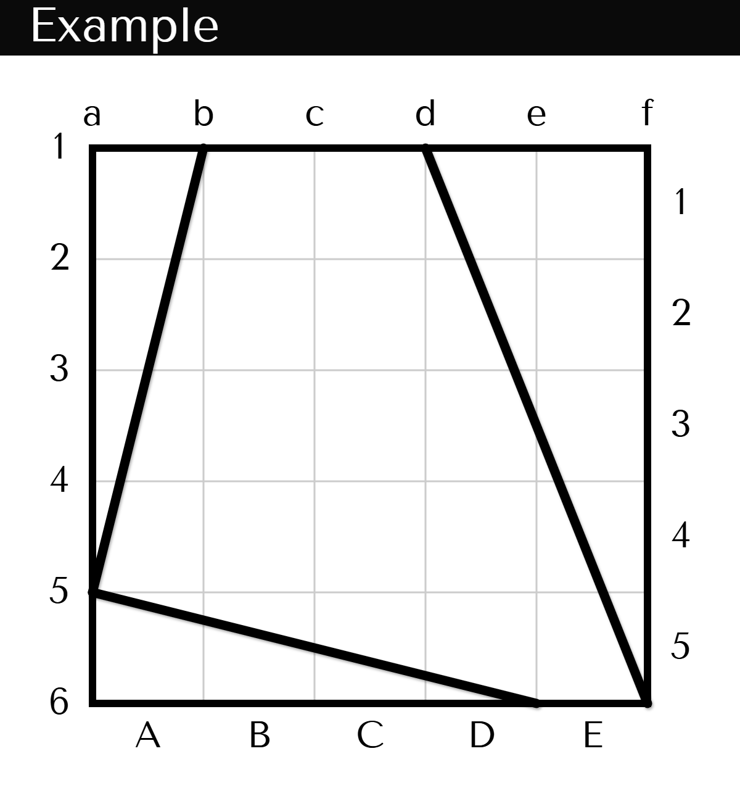
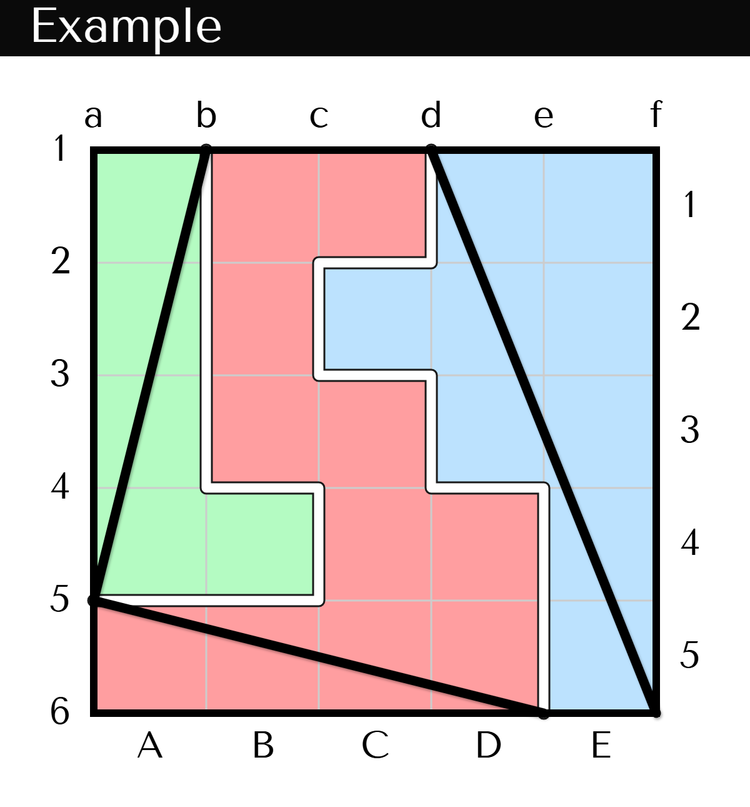
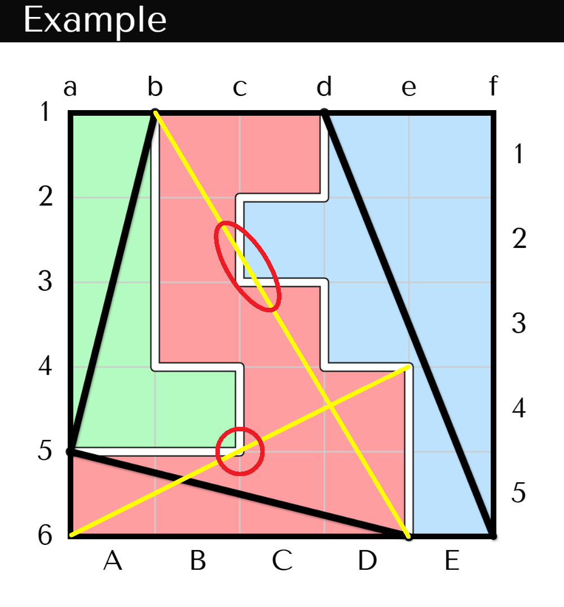
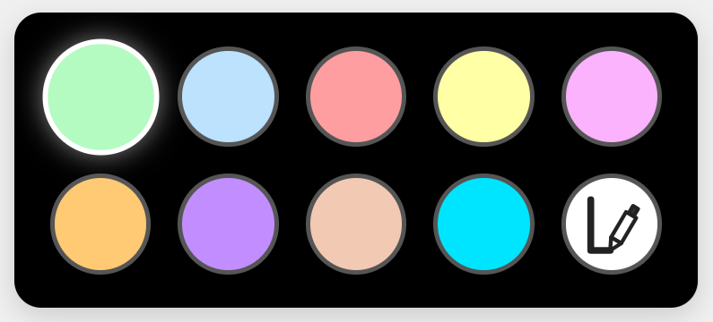
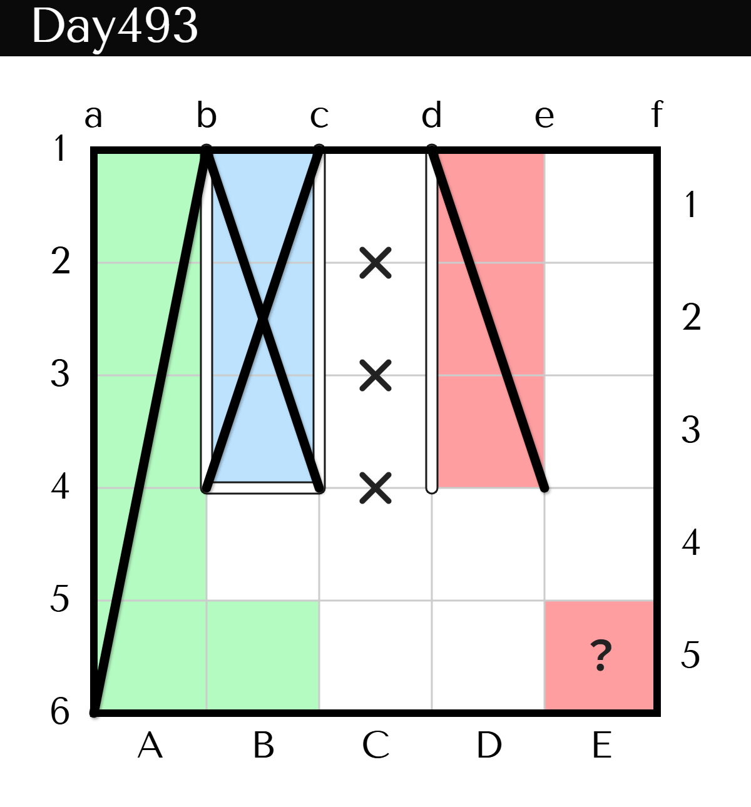
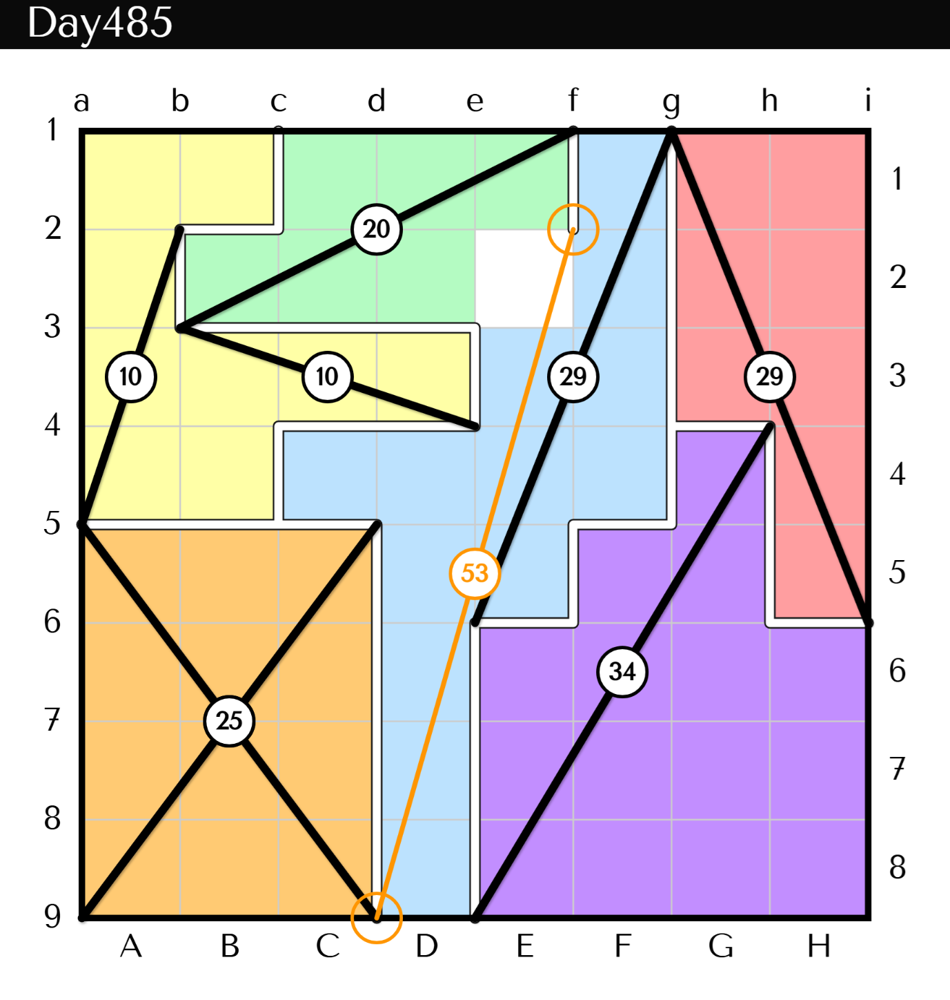
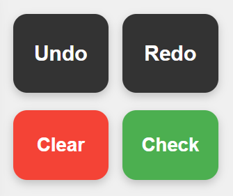

【例題】

【答え】

① 点線上に境界線を引き、盤面をいくつかのブロックに分割します。境界線を挟むマスどうしが同じブロックになることはありません。また、使わないマスはありません。
② 初めから出ている斜線は各ブロックの一番長い対角線（複数ある場合はすべて）です。ただし、対角線はその両端以外がブロック内部を通過するものだけを対象とし、ブロックの他の頂点やブロックの外部を通過するものは除外します。
以下のような対角線は除外され、これら以外の対角線の中で最長のものが黒い斜線として表示されます。

🎬 例題の解き方
初期状態で配置されている黒い斜線（以下、「鉱脈」）の長さに注目して、これ以上に長い対角線が同じブロックに内包されないようにブロックを分割していきます。
鉱脈が複数のブロックにまたがることはありませんので、1本の鉱脈が通過するマスには同じ色をぬってしまいます。同じ長さの鉱脈はルール上同じブロックに属する可能性がありますが、とりあえず別の色で塗ってしまうことをオススメします。後半で手が止まったときに、「もしやあの2ブロックは同じブロックだったのでは？」と振り返られるように脳みそにセットしておいてください。(例題の緑ブロックと赤ブロックがこれに該当しますが、これらが同じブロックだとa5が頂点でなくなるので、ここはすんなり別ブロックと判定ができます。)
また、E1やE2のように一つの色のマス(この場合、青のマス)に囲まれたマスは他の色になれないので、青で塗りつぶしてしまいましょう。
🎬 例題の解き方(ステップ1,2)
鉱脈の両端はその鉱脈を含むブロックの頂点にあたります。なので鉱脈が外周に足を下ろす場合、そこから境界線が発生します。例題のb1やd1のように、B1やC1のマスが何色になるか決まってない段階でも、b1b2、d1d2部分に境界線が引けます。
長方形ブロックは必ず2本の鉱脈をもつので、鉱脈が1本しかない場所が長方形になりそうな場所を探します。例題で言うと緑と赤のブロック。このまま閉じればどちらも長方形ブロック。ですがどちらも鉱脈は1本だけなので、どちらもこのまま閉じることはありません。まずB4のマス、ここが緑のブロックじゃないなら、即座にa1b5は緑のブロックの対角線になってしまいます。なのでB4は緑のマスとなります。同様に考えてD4は赤のマスになります。
🎬 例題の解き方(ステップ3)
ここで中級手筋。B1とC1のマスにご注目。B1が緑のブロックにならない、C1が青のブロックにならないことは言いました。ここで、B1のマスが青のブロックになりうるかを考えてみましょう。もしB1のマスが青なら、かならずD1のマスに青色で地続きになる必要があります。このとき青でないことが決まっているC1のマスはどうなるでしょう。緑のマスにも赤のマスにも地続きになれず、孤立してしまいます。ということはつまり、B1のマスは青のマスになれないのです。同様に考えて、C1のマスも緑のマスになれません。つまり、B1とC1は青にも緑にもなれず、もちろん色を塗らずに終わることもできず、その結果、これらは赤のマスとなります。
🎬 例題の解き方(ステップ4,5)
B1とC1に突然現れた赤のマス。下の方にある赤のマスに地続きでつながらなくてはなりません。ということはC3とC4は赤のマスにしておかないと地続きが叶わなくなります。ここでC2まで赤のマスにしてしまうと、このブロックは対角線d1c5も鉱脈として出ていないといけないブロックになってしまうので、C1は赤のマスではないということが分かります。また、C1を緑のマスにしてしまうとまた赤のマスが地続きにできなくなります。なのでC2は青のマス。あとは赤マスを地続きにしてすべてのブロックの形が決まります。
KOMYAKU Playerは、鉱脈地図の問題とカラーパレットと4つのボタン(Undo/Redo/Clear/Check)で構成されます。
カラーパレットには9つの色が用意されています。選択した色でマスを塗ったり白マスに戻したりできます。

KOMYAKU Playerでは隣接マスが異なる色で塗られると自動的に境界線を描画しますが、そうでない場合に境界線だけを描きたいケースがあります。その他、問題を解く上でのメモとして補助記号を用意しています。

マス境界線の交差点(格子点)を始点にタテヨコにスワイプ/ドラッグすると、マス境界線上にブロック境界線を引くことができます。再度同じ場所をスワイプ/ドラッグすれば消去できます。
※ブロック境界線の両側のマスがすでに塗られている場合、そのブロック境界線は消去できません。
マスの四辺の中央付近をタップ/クリックすると、「✕」マークを配置できます。ブロック境界線が引けないことが確定した場所に補助記号としてお使いください。再度タップ/クリックすれば消去できます。
マスの中央付近をタップ/クリックすると、「？」マークを配置できます。色を仮置きする場合などに補助記号としてお使いください。再度タップ/クリックすれば消去できます。
通常の色塗りモードで格子点(マス境界線の交点)を始点にドラッグするとオレンジ色の線が引けます。線の中央には線の長さを表す数値が表示され、各鉱脈の長さも同時に表示されるので、注目している格子点間の距離が注目している鉱脈よりも長くないかのチェックに使えます。また、注目している格子点間を結ぶ線がどのマスを通過するかも併せて確認することができます。
※各線の中央に表示する数値は、マス1辺の長さを1としたときの、各線の長さの2乗の値です。2乗しているのは整数値にするためで、線の長さの比較にはそのままお使いいただけます。

その問題に対するすべての操作を手戻し/やり直しできます。
その問題を解く前の状態に初期化できます。
※間違って押してしまった場合はUndoボタンで戻れます。
ブロック境界線がすべて正しく引かれれば正解アニメーションが表示されます。すべて解き終えたはずなのに正解アニメーションが表示されない場合に押すと、不正解理由にあたる部分が赤マークで強調表示されます。
※もし何も表示されない場合は重解の可能性がありますのでお知らせいただけますと助かります。
